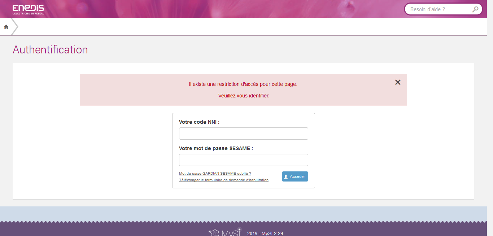
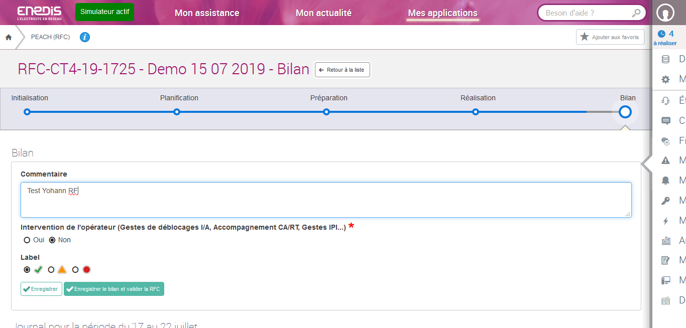
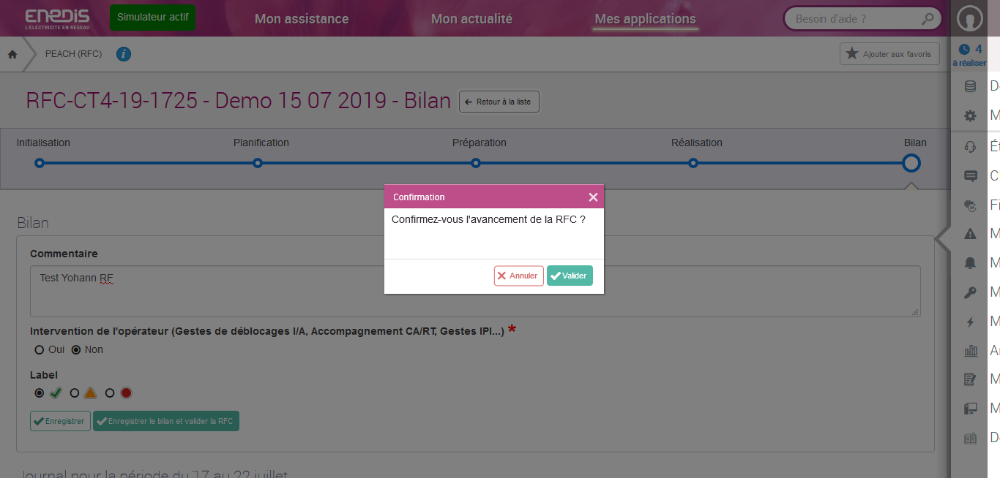

Rapport des captures
PEACH.traiterLaPartieBilanDUneRfc.YPORHEL
Rapport des captures ayant ete prise par le robot
Execute sur : EPW92XP1-YPORHEL
selenium-screenshot-1.png
selenium-screenshot-2.png

selenium-screenshot-3.png

selenium-screenshot-4.png
